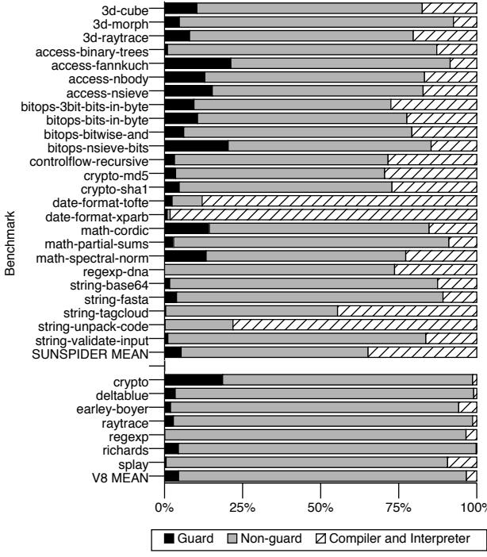
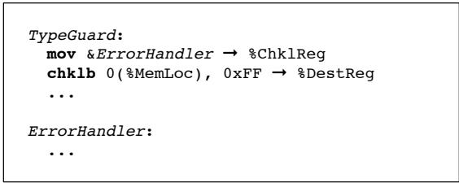
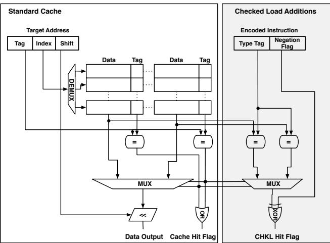
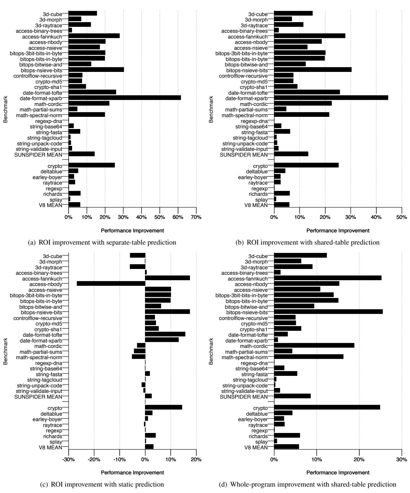

Checked Load: Architectural Support for JavaScript Type-Checking on Mobile Processors 图表详解¶
Figure 1. Code generated by Nitro for the op put by val (indexed array store) macrooperation. Note the five guards that it performs: that the index is an integer, that the array is non-primitive, that the array is an array, that the array length is not zero, and that the data pointer is not null.¶

- 图片展示了 Nitro JavaScript VM 为
put by val宏操作（即索引数组存储a[i] = c;）生成的 x86 汇编代码，该代码位于 FastPath 分支。 - 代码中包含 五个类型守卫（guards），分别用于验证：
- 索引是否为整数
- 数组是否为非原始类型（JSObject）
- 对象是否为 JSArray 类型
- 数组长度是否非零
- 数据指针是否非空
- 每个守卫由比较指令（如
cmp,test）和条件跳转指令（如jb,jne,jae,je）组成，若检查失败则跳转至 SlowCase 处理错误或转换逻辑。 - 代码结构清晰，按顺序执行多个检查，每个检查后紧跟一个条件跳转，确保只有所有检查通过才进入最终的存储操作
mov %rax → 0x18(%r13)。 - 从注释可见，这些检查涉及虚拟寄存器加载、对象类型校验、数组长度与指针有效性判断，体现了 JavaScript 动态类型系统在底层实现中的复杂性。
- 该段代码共包含 5 个 guard 块，每个块平均约 2–3 条指令，总计超过 15 条指令，其中近半数用于类型检查，凸显了动态类型语言在性能上的开销。
| Guard Type | Instruction Sequence | Purpose |
|---|---|---|
| Integer Index | cmp %r14, %rdx → jb SlowCase → mov %edx → %edx |
验证索引为整数 |
| Non-primitive JSObject | test %rax, %r15 → jne SlowCase → mov $0x797d10 → %r11 |
验证对象非原始类型 |
| JSArray Type | cmp %r11, (%rax) → jne SlowCase → mov 0x38(%rax) → %rcx |
验证对象为 JSArray 类型 |
| Array Length Non-zero | cmp 0x30(%rax), %edx → jae SlowCase → mov 0x20(%rcx,%rdx,8) → %rax |
验证数组长度有效且索引不越界 |
| Null Pointer Check | test %rax, %rax → je SlowCase |
验证数据指针非空 |
- 最终存储操作仅在所有守卫通过后执行，否则控制流转入 SlowCase，调用通用类型转换或错误处理例程。
- 此代码片段是论文中论证“动态类型检查消耗大量指令”的核心例证，说明即使简单语句如
a[i] = c;在 JavaScript 中也需多层运行时检查。 - 论文后续提出的 Checked Load 指令旨在将此类多指令序列融合为单条指令，并在缓存层面并行完成标签检查，从而消除分支延迟与指令膨胀。
Figure 2. The dynamic instruction count cost of dynamic type checks in JavaScript benchmarks.¶

- 图片展示了 Figure 2(a)，即“Region-of-interest (ROI) breakdown”，用于量化 JavaScript 基准测试中动态类型检查（type guards）在动态指令计数中的占比。
- 数据基于对 Nitro JavaScript VM 的模拟执行，聚焦于动态生成代码区域，排除了编译器和解释器阶段的开销。
- 图表采用堆叠条形图形式，每个基准测试对应一条横向条形，黑色部分代表 Guard 指令，灰色部分代表 Non-guard 指令。
- 所有基准测试按名称垂直排列，底部包含 SunSpider 和 V8 套件的平均值（SUNSPIDER MEAN, V8 MEAN）。
- SunSpider 套件（上半部分）中，多个基准测试的 Guard 指令占比超过 25%，最高达 46.8%（date-format-xparb），最低接近 0%（regexp-dna）。
- V8 套件（下半部分）整体 Guard 占比更低，平均仅 4.1%，因该套件更依赖哈希表操作，类型检查成本被摊薄。
- SunSpider 平均值为 10.9%，表明在典型客户端 JavaScript 应用中，类型检查是不可忽视的性能开销。
- V8 平均值为 4.1%，反映其工作负载特性不同，但仍有部分测试如 crypto 显示较高类型检查比例。
- 该图直观揭示了动态类型语言在移动处理器上的性能瓶颈：频繁的类型检查显著增加指令数量，尤其在数值密集型或简单对象访问场景下。
| Benchmark Category | Example Benchmarks | Guard % Range | Mean Guard % |
|---|---|---|---|
| SunSpider | date-format-xparb, math-cordic | 0% – 46.8% | 10.9% |
| V8 | crypto, raytrace | Low to Moderate | 4.1% |
- 此数据支撑论文核心论点：类型检查是移动 JavaScript 性能的关键制约因素，值得通过架构级优化（如 Checked Load）解决。
9e158821c24cecf7e7c8a61e01c41a755194ee2ac937ba4780681caa399ae050.jpg¶

- 图片为柱状图，标题为“Figure 2(b) Whole-program breakdown”，展示 JavaScript 基准测试中各类指令的动态执行占比。
- 横轴表示百分比（0% 至 100%），纵轴列出多个 SunSpider 和 V8 基准测试名称，以及两个汇总项：SUNSPIDER MEAN 和 V8 MEAN。
- 图例说明三类区域：
- Guard（黑色）：动态类型检查相关指令。
- Non-guard（灰色）：非类型检查的生成代码指令。
- Compiler and Interpreter（斜线填充）：编译器与解释器阶段消耗的指令。
- 数据显示，在多数基准测试中，Compiler and Interpreter 占比显著，尤其在 SunSpider 套件中，如
date-format-xparb、string-unpack-code等，其占比接近或超过 50%。 - Guard 指令占比在不同基准间差异大。例如：
date-format-xparb中 Guard 占比约 20%，而regexp-dna几乎为 0。- V8 套件中，Guard 占比普遍较低，如
crypto、deltablue等均低于 10%。
- 平均值方面：
- SUNSPIDER MEAN：Guard 约占 6.3%，Non-guard 约 47%，Compiler and Interpreter 约 46.7%。
- V8 MEAN：Guard 约占 4.1%，Non-guard 约 58%，Compiler and Interpreter 约 37.9%。
- 该图强调：尽管 Guard 指令在生成代码中占比可观（见 Figure 2a），但在完整程序执行中，因编译/解释开销存在，其相对影响被稀释。
- 作者在正文指出，随着 VM 优化进步，编译/解释开销将趋近于零，届时 Guard 的性能影响将更突出，凸显 Checked Load 架构扩展的价值。
| Benchmark Category | Guard (%) | Non-guard (%) | Compiler and Interpreter (%) |
|---|---|---|---|
| SUNSPIDER MEAN | ~6.3 | ~47 | ~46.7 |
| V8 MEAN | ~4.1 | ~58 | ~37.9 |
- 关键结论：Guard 成本在完整程序中被掩盖，但随 VM 演进将日益凸显，硬件加速（如 Checked Load）具有长期价值。
Figure 3. The cycle cost of dynamic type checks in JavaScript benchmarks.¶

- 图片 e472d9348d4f362b4b3e6ee8591f747c0f4d093021eed00347c032156a2640c6.jpg 为 Figure 3，展示 JavaScript 基准测试中动态类型检查的周期开销，分为两个子图：(a) 区域兴趣（ROI）分解与 (b) 全程序分解。
- 子图 (a) “Region-of-interest (ROI) breakdown” 聚焦于动态生成代码执行阶段，排除编译器和解释器开销。横轴为百分比，纵轴列出 SunSpider 和 V8 基准测试名称。
- 黑色部分代表 Guard 指令消耗的周期。
- 灰色部分代表 Non-guard 指令消耗的周期。
- 数据显示，部分基准测试中 Guard 开销极高，例如 date-format-xparb 的 Guard 占比接近 60%，而 regexp-dna 几乎为 0%。
- SunSpider 套件平均 Guard 开销为 14.7%，V8 套件平均为 6.5%。
- 子图 (b) “Whole-program breakdown” 将分析范围扩展至整个程序执行，包括编译器和解释器阶段。
- 新增斜线填充区域代表 Compiler and Interpreter 阶段消耗的周期。
- 在此视角下，Guard 开销被稀释，整体平均降至 8.5%。
- SunSpider 平均 8.8%，V8 平均 6.4%。
- 例如，string-unpack-code 中大部分周期消耗在编译器阶段，Guard 开销极小。
- 关键观察：
- 动态类型检查的周期成本在不同基准测试间差异巨大，从接近 0% 到超过 60%。
- SunSpider 基准测试普遍比 V8 套件更依赖类型检查，因其包含更多数值运算。
- 当考虑全程序时，Guard 开销占比下降，但随着 VM 优化，编译/解释开销会减少，使 ROI 内的 Guard 成本成为主要瓶颈。
- 数据摘要表：
| 基准套件 | ROI 内 Guard 周期占比均值 | 全程序内 Guard 周期占比均值 |
|---|---|---|
| SunSpider | 14.7% | 8.8% |
| V8 | 6.5% | 6.4% |
| 总体 | 12.9% | 8.5% |
- 此图直观证明了动态类型检查是移动处理器上 JavaScript 执行的主要性能瓶颈，尤其在数值密集型应用中，其周期开销可高达总执行时间的六成以上。
Figure 4. Sample generated code for an integer guard.¶

- 图片展示的是 Figure 4，即使用 Checked Load 指令生成的整数类型守卫（integer guard）代码示例。
- 该代码片段由三部分组成：TypeGuard 标签、核心指令序列、以及 ErrorHandler 标签。
- 第一行指令
mov &ErrorHandler → %ChklReg将错误处理函数的地址加载到专用寄存器 chklp 中，为后续的硬件异常转移做准备。 - 第二行指令
chklb 0(%MemLoc), 0xFF → %DestReg是核心的 Checked Load 指令：- 它从内存地址
%MemLoc加载一个字节值。 - 同时在缓存访问阶段，自动将该值的最高字节与立即数
0xFF进行比较。 - 若比较失败（即类型不匹配），则硬件自动跳转至 chklp 寄存器指向的错误处理程序。
- 若比较成功，则将加载的数据写入目标寄存器
%DestReg，并继续执行后续指令。
- 它从内存地址
- 最后一行
ErrorHandler:标记了错误处理程序的入口点，用于处理类型检查失败的情况。 - 此代码结构体现了 乐观执行策略：假设类型检查通过，仅在失败时才触发硬件异常转移，从而避免了软件分支预测和冗余比较指令。
- 与传统软件实现相比，该方案将原本需要多条指令（load + mask + compare + branch）完成的类型检查，压缩为一条 chklb 指令，显著减少指令数和潜在的分支预测开销。
| 指令 | 功能描述 | 关键作用 |
|---|---|---|
mov &ErrorHandler → %ChklReg |
设置错误处理程序地址 | 配置硬件异常转移目标 |
chklb 0(%MemLoc), 0xFF → %DestReg |
带类型检查的加载指令 | 融合加载、比较、分支，实现高效类型守卫 |
ErrorHandler: |
错误处理入口 | 处理类型检查失败的恢复逻辑 |
- 该示例清晰展示了 Checked Load 如何在指令层面集成类型检查，利用硬件并行性消除软件开销，是论文中提出的架构扩展在实际代码生成中的具体体现。
Figure 5. Sample generated code for an object guard.¶

- 图片展示了 Figure 5，即使用 Checked Load 指令生成的 对象类型守卫（object guard） 示例代码。
- 该代码分为三个逻辑块：IntGuard、TypeGuard 和 ErrorHandler，分别对应整数检查、对象类型检查和错误处理入口。
- IntGuard 块：
- 首先将错误处理函数地址
&ErrorHandler加载到专用寄存器%ChklReg，用于后续失败跳转。 - 执行
chklbn 0(%MemLoc), 0xFF → %DestReg，该指令从内存位置%MemLoc加载值，并检查其标签是否 不等于0xFF（即非整数），若失败则跳转至%ChklReg指向的错误处理程序。
- 首先将错误处理函数地址
- TypeGuard 块：
- 将类型标签
0xFF..FF（全1）加载到通用寄存器%TagReg。 - 执行
chklw 0(%DestReg), %TagReg → %DestReg2，该指令从%DestReg指向的地址加载数据，并检查其缓存行首字是否与%TagReg匹配。匹配失败则跳转至错误处理程序。
- 将类型标签
- 此代码结构体现了 两层间接访问 的典型对象访问模式：第一层验证指针非整数，第二层验证对象类型。
- 该实现利用了 chklbn（否定标签比较）和 chklw（寄存器标签比较）两条指令，有效替代了传统软件中多条指令构成的类型检查序列。
- 错误处理部分以省略号
...表示，实际由 VM 生成的通用错误恢复代码填充。
| 指令块 | 功能描述 |
|---|---|
| IntGuard | 设置错误处理地址，并用 chklbn 检查加载值是否为非整数。 |
| TypeGuard | 加载对象类型标签，并用 chklw 检查对象头部标签是否匹配。 |
| ErrorHandler | 标记错误处理入口，实际执行由 VM 生成的恢复或转换逻辑。 |
- 关键术语保留英文：Checked Load, chklbn, chklw, %ChklReg, %TagReg, ErrorHandler。
- 整体代码简洁高效，通过硬件支持的指令融合，显著减少动态类型检查的指令开销和分支延迟。
Figure 6. Implementation of chklb tag checking in parallel with cache tag checking¶

- 图片展示了 chklb 指令在缓存层级实现类型标签检查的硬件结构，其核心目标是与标准缓存命中检测并行执行，从而不延长关键路径。
- 左侧为Standard Cache模块，负责传统地址匹配：输入 Target Address 被拆分为 Tag、Index、Shift；Index 用于选择缓存组（way），Tag 与各路缓存中的 Tag 进行比较，通过 MUX 选出匹配数据，并输出 Data Output 和 Cache Hit Flag。
- 右侧为Checked Load Additions模块，新增逻辑用于类型检查：
- 输入包括 Encoded Instruction 中的 Type Tag（字节立即数）和 Negation Flag（是否取反）。
- 对每个缓存路（way），将从该路读出的数据的最高字节与 Type Tag 进行比较。
- 比较结果经由一个 MUX 选择，该 MUX 的选择信号来自左侧缓存 Tag 比较器的输出（即哪个 way 匹配）。
- 最终比较结果与 Negation Flag 经 XOR 门处理，生成 CHKL Hit Flag。
- 关键设计点在于：类型标签比较与缓存 Tag 比较同时进行，且最终结果的选择依赖于已有的缓存命中判断逻辑，确保新增逻辑深度不超过原缓存路径。
- 该结构支持 chklb 指令的语义：若加载地址对齐缓存行，且数据最高字节与指定 Type Tag（或其取反）匹配，则正常执行；否则触发异常，跳转至 chklp 寄存器指向的错误处理程序。
- 硬件开销极小，仅需增加少量比较器、MUX 和 XOR 门，无需修改缓存阵列结构或增加额外流水级。
Figure 7. Performance impacts of Checked Load¶

- 图片展示了 Figure 7，标题为“Performance impacts of Checked Load”，包含四个子图，分别评估了不同预测机制下 Checked Load 对 JavaScript 性能的影响。
- 子图 (a) 展示了在**独立预测表（separate-table prediction）机制下，各基准测试在ROI（Region of Interest）**的性能提升情况。多数基准测试获得正向收益，其中 date-format-xparb 提升高达 60%+，而部分如 string-unpack-code 和 string-validate-input 提升较小或接近零。
- 子图 (b) 展示了在**共享预测表（shared-table prediction）**机制下，ROI 的性能提升。整体趋势与 (a) 相似，但提升幅度略有下降，例如 date-format-xparb 约为 50%，crypto 约为 25%，表明共享硬件对性能影响有限。
- 子图 (c) 展示了**静态预测（static prediction）**机制下的 ROI 性能变化。该策略假设类型检查很少失败，结果导致部分基准测试出现负向性能影响，如 access-nbody 下降约 25%，而 crypto 仍保持约 15% 的正向提升。
- 子图 (d) 展示了在共享预测表机制下，**整个程序（whole-program）**的性能提升。由于包含了编译器和解释器开销，整体提升幅度低于 ROI，平均约为 7.8%，但仍显著优于静态预测。
- 关键数据对比：
| 预测机制 | ROI 平均提升 | Whole-program 平均提升 |
|---|---|---|
| Separate-table | 11.9% | — |
| Shared-table | 11.2% | 7.8% |
| Static prediction | 1.5% | — |
- 从图表可见，动态预测机制（无论是独立还是共享表） 显著优于静态预测，尤其在数值密集型基准测试（如 crypto、math-cordic）中表现突出。
- date-format-xparb 在所有配置下均表现出最高性能增益，说明其高度依赖频繁类型检查，是 Checked Load 最大受益者。
- V8 MEAN 和 SUNSPIDER MEAN 均显示，SunSpider 套件比 V8 套件更受益于 Checked Load，这与文中所述 SunSpider 更多涉及原始类型检查一致。
- 所有子图横轴均为“Performance Improvement”，单位为百分比，纵轴列出具体基准测试名称，便于横向比较不同预测策略对同一基准的影响。
- 图表设计清晰，通过条形长度直观反映性能变化，黑色条形代表正向提升，灰色虚线标记零点，便于识别负向影响。
Table 1. The prediction rates for Checked Load with static prediction, dynamic prediction with a separate branch history table, and dynamic prediction with a joined branch history table.¶

- 该表格（Table 1）记录了三种不同预测机制下 Checked Load 指令的预测准确率，用于评估其在 JavaScript 性能优化中的有效性。
- 三种预测类型分别为：
- Static Prediction：静态预测，假设类型检查极少失败。
- Dynamic Joined：动态预测，与通用分支预测共享同一 Branch History Table (BHT)。
- Dynamic Separate：动态预测，使用独立的 BHT。
以下是各基准测试的预测准确率数据：
| Benchmark | Static | Dynamic Joined | Dynamic Separate |
|---|---|---|---|
| 3d-cube | 76.5% | 97.7% | 98.4% |
| 3d-morph | 86.6% | 99.7% | 99.3% |
| 3d-raytrace | 68.3% | 96.9% | 99.1% |
| access-binary-trees | 92.3% | 99.9% | 99.9% |
| access-fannkuch | 100% | 99.7% | 99.9% |
| access-nbody | 58.0% | 96.6% | 98.2% |
| access-nsieve | 100% | 91.9% | 99.9% |
| bitops-3bit-bits-in-byte | 100% | 100% | 100% |
| bitops-bits-in-byte | 100% | 100% | 100% |
| bitops-bitwise-and | 100% | 100% | 100% |
| bitops-nsieve-bits | 99.9% | 99.9% | 99.9% |
| controlflow-recursive | 100% | 100% | 100% |
| crypto-md5 | 100% | 99.6% | 99.9% |
| crypto-sha1 | 100% | 98.9% | 99.9% |
| date-format-tofte | 99.8% | 99.4% | 99.9% |
| date-format-xparb | 85.2% | 91.9% | 99.9% |
| math-cordic | 83.0% | 99.3% | 99.3% |
| math-partial-sums | 69.0% | 99.1% | 99.1% |
| math-spectral-norm | 76.3% | 98.1% | 99.9% |
| regexp-dna | 81.4% | 74.0% | 57.1% |
| string-base64 | 86.4% | 99.6% | 100% |
| string-fasta | 93.5% | 99.7% | 99.9% |
| string-tagcloud | 87.0% | 98.5% | 99.9% |
| string-unpack-code | 55.9% | 97.8% | 99.8% |
| string-validate-input | 76.7% | 97.9% | 99.9% |
| SunSpider Mean | 87% | 97.4% | 98.0% |
| crypto | 100% | 99.8% | 99.9% |
| deltablue | 99.6% | 96.1% | 99.6% |
| earley-boyer | 94.2% | 95.6% | 99.4% |
| raytrace | 76.6% | 88.2% | 97.3% |
| regexp | 100% | 94.3% | 99.7% |
| richards | 100% | 97.4% | 100% |
| splay | 93.6% | 98.0% | 100% |
| V8 Mean | 94.8% | 95.6% | 99.5% |
-
关键观察：
- Static Prediction 在多数测试中表现最差，尤其在
access-nbody、math-partial-sums和regexp-dna等类型频繁变化的场景中，准确率显著低于动态预测。 - Dynamic Separate 预测准确率最高，平均达到 98.0% (SunSpider) 和 99.5% (V8)，表明独立预测表可提供最优性能。
- Dynamic Joined 虽然共享硬件资源，但准确率仍接近独立表，平均为 97.4% (SunSpider) 和 95.6% (V8)，说明硬件复用策略有效且成本低。
- 特别值得注意的是
regexp-dna，其静态预测准确率高达 81.4%，但动态预测反而下降，可能因该测试中类型行为高度不可预测或存在特殊模式干扰预测器。 - 多数位运算和字符串操作类测试（如
bitops-*,string-*）在所有预测方式下均接近 100%，表明这些操作类型稳定，易于预测。
- Static Prediction 在多数测试中表现最差，尤其在
-
结论：
- 动态预测机制显著优于静态预测，是提升 Checked Load 效能的关键。
- 共享预测硬件（Joined）在性能损失极小的前提下大幅节省芯片面积，适合资源受限的移动处理器。
- 对于特定高变动性基准（如
regexp-dna），需进一步分析其行为以优化预测策略。